게임, 사진, 영상, 퀴즈, PPT 등 학교 수업에 필요한 컨텐츠를 스스로 만들고 창작할 수 있다.
Gemini 바로 가기
주의 꼭 @gmail.com 으로 끝나는 일반 계정으로 접속할 것
SECTION 01
바이브 코딩이란
코딩을 몰라도 괜찮아요. 만들고 싶은 것을 말로 설명하면 AI가 코드를 대신 써 줍니다. 바이브 코딩의 개념부터 차근차근 살펴봅니다.
이런 내용을 다뤄요
- 코딩 지식 없이 자연어(우리말)로 프로그램 만들기
- 만들고 싶은 기능을 문장으로 설명 → AI가 코드 생성
- 결과를 보고 다시 말로 고쳐 달라고 요청하기
- 교실 예시: 자리 뽑기, 학습 도우미, 미니 게임
바이브 코딩이란?
바이브 코딩(Vibe Coding)은 프로그래밍 언어 대신 평소 쓰는 말(자연어)로 원하는 기능을 설명하면 AI가 코드를 대신 써 주는 방식이에요. 복잡한 문법을 외울 필요 없이 ‘무엇을 만들고 싶은지’에만 집중하면 됩니다.
핵심은 한 번에 완성하는 것이 아니라 대화예요. 나온 결과를 보고 ‘글씨를 더 크게’, ‘학생 이름을 넣어줘’처럼 말로 고쳐 나가며 원하는 모습으로 다듬습니다.
왜 학교 현장에서 유용할까요?
시중 프로그램은 우리 반 상황에 딱 맞지 않을 때가 많습니다. 바이브 코딩은 필요한 기능만 담은 도구를 선생님이 직접, 빠르게 만들 수 있어요.
단원에 맞춘 퀴즈·낱말 카드·학습지를 그 자리에서 제작.
자리 뽑기·모둠 편성·타이머처럼 매일 쓰는 도구를 우리 반 규칙대로.
학생이 직접 아이디어를 말해 미니 게임·앱을 만들며 디지털 소양 기르기.
이렇게 시작해 보세요
잘 만드는 비결은 구체적으로 말하기예요. 아래 세 가지만 넣어도 결과가 크게 좋아집니다.
만들 도구의 종류 — ‘자리 뽑기 프로그램’
필요한 기능 — ‘짝꿍이 안 겹치게, 다시 뽑기 버튼’
대상·환경 — ‘전자칠판에서 크게 보이게’
👉 예) “우리 반 자리 뽑기 프로그램을 만들어줘. 짝꿍이 겹치지 않게 하고, 다시 뽑기 버튼과 큰 글씨로 전자칠판에서 잘 보이게 해줘.”
SECTION 02
인공지능으로
그리는 그림
수업에 필요한 삽화, 배경, 캐릭터를 문장 한 줄로 만들어 봅니다. 저작권 걱정 없이 우리 반만의 이미지를 만들어 보세요.
준비하기
-
1
학교 · 학년 · 반 · 번호 치고 입장하기
‘나는 프롬프트 마스터’에 접속해 우리 학교를 검색합니다. 학년·반은 1학년 10반, 출석 번호는 세 자리 수 아무거나 입력하고 [입장하기]를 누르세요.
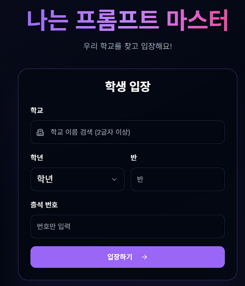
-
2
연습 모드로 입장하기
모드 선택 화면이 나오면 [연습 모드]의 [연습 시작하기]를 누릅니다. 다양한 사진을 보고 자유롭게 프롬프트를 작성하며 AI의 피드백을 받아볼 수 있어요.
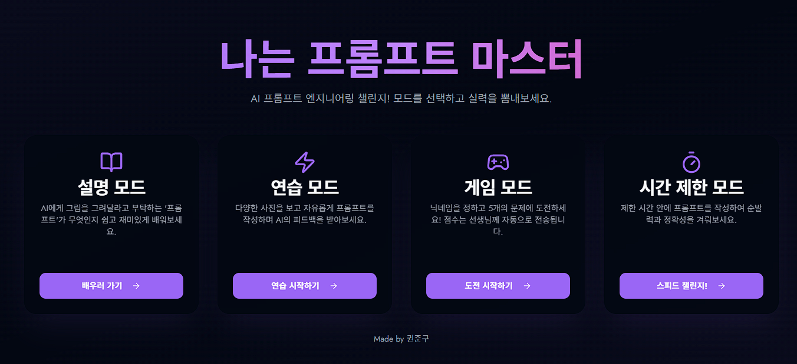
-
3
묘사하는 프롬프트를 쳐봅시다
화면의 그림을 보고 한 번도 못 본 친구에게 문자로 설명하듯 써봅니다. 색깔·자세·느낌을 생각나는 대로 자세히 쓸수록 AI가 더 똑같은 그림을 만들어요. 다 썼으면 [평가 받기]를 누르세요.
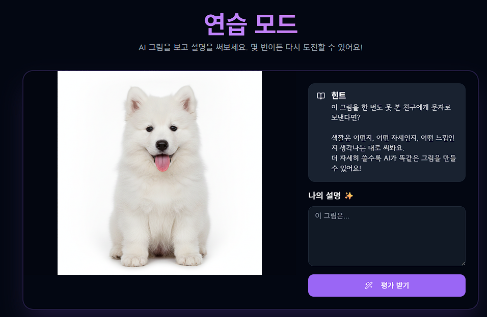
사진·영상 프롬프트의 핵심
그림의 유형 · 크기 · 표현 방법을 구체적으로 쓰는 것이 핵심입니다.
수채화, 라인아트, 3D 피규어 …
정사각형, 가로형, 세로형 …
색감, 분위기, 구도, 디테일 …
구체적으로 쓰는 연습을 하면, 원하는 이미지를 자유롭게 만들고 편집할 수 있어요.
✅ 아이들도 직접 실습 가능!
이제 믹스보드로 아이디어를 펼쳐봐요
믹스보드(Mixboard)는 구글 랩스의 AI 컨셉 보드예요. 이미지를 보드 위에 자유롭게 펼쳐 놓고, 탐색하고(explore), 확장하고(expand), 다듬으며(refine) 아이디어를 키울 수 있어요.
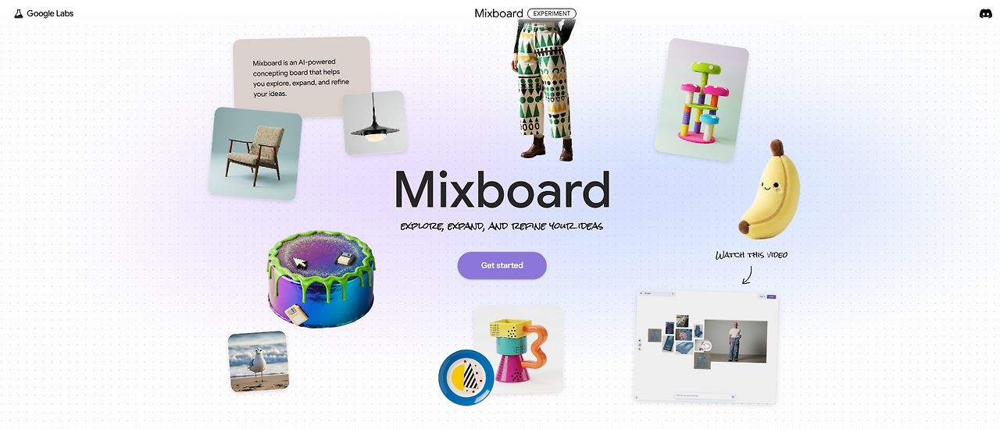
믹스보드로 이런 걸 해봐요
- 아이들의 아이디어를 한 장면에서 여러 갈래로 확장하기
- 여러 이미지를 한 번에 띄워 놓고 비교·조합하기
- 장면을 이어 붙여 동화책처럼 이야기 만들기
믹스보드 실습 1 · 릴레이 이어 동화 만들기
한 장면에서 시작해, 다음 장면을 이어 그리며 우리 반만의 동화를 완성합니다. 친구와 번갈아(릴레이) 장면을 더해 이야기를 이어 보세요.
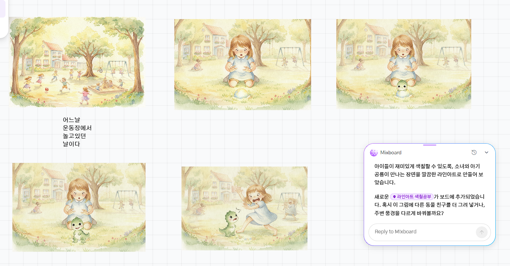
이렇게 해봐요
- 첫 장면과 짧은 문장을 보드에 올리기 (예: “어느날 운동장에서 놀고 있던 날이다”)
- 인물과 배경은 그대로 두고, 다음 장면을 이어서 생성하기
- 친구와 번갈아 한 장면씩 더해 이야기를 잇기
- 완성한 장면을 라인아트로 바꿔 색칠 활동으로 활용하기
장면별 프롬프트 — 한 줄씩 복사해서 붙여넣기
같은 화풍과 등장인물이 이어지도록, 1번부터 순서대로 한 줄씩 복사해 만들어 보세요.
믹스보드 실습 2 · 아이들의 작품을 실제처럼 바꾸기
아이가 그린 그림을 사진으로 찍어 올리면, 믹스보드가 그 구성을 그대로 살려 실제 같은 이미지로 바꿔 줍니다. 내 그림이 진짜 사진처럼!
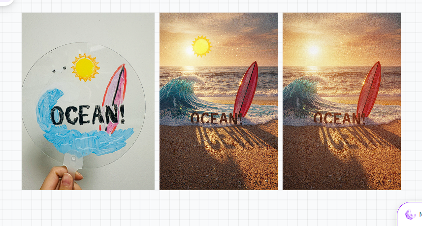
이렇게 해봐요
- 아이의 그림(예: 바다·태양·파도·서핑보드)을 사진으로 찍어 보드에 올리기
- “이 그림을 실제 사진처럼 바꿔줘”라고 요청하기
- 노을, 한낮 등 분위기를 바꿔 여러 버전으로 비교해 보기
- 그림 속 글자(OCEAN!)나 요소를 그대로 살려 달라고 덧붙이기
용도별 프롬프트 샘플 10가지
‘나노 바나나(Gemini 이미지 모델)’용으로 많이 쓰이는 프롬프트를 교실 상황에 맞게 바꿨어요. 사진을 올린 뒤 한 줄씩 복사해 붙여넣어 보세요.
✏️ 다 같이 따라 만들기
믹스보드 실습 3 · 내 캐릭터로 여러 버전 만들기
아래 픽셀 캐릭터를 다운로드해 믹스보드에 올린 뒤, 라인아트 색칠 도안 · 스티커 세트 · 실사 배경 합성 세 가지 버전으로 변신시켜 보세요.
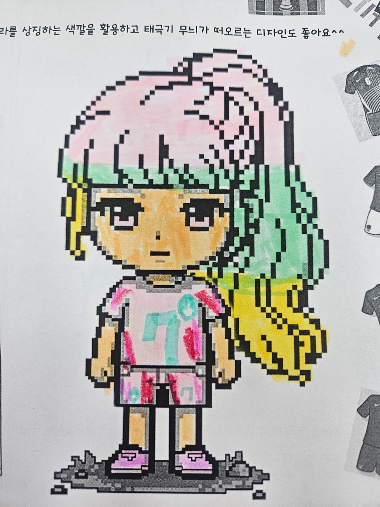
{kind=link}
완성 목표 — 이렇게 바꿔 봐요
원본 → 라인아트 색칠 도안 → 표정 4종 스티커 세트 → 가을 운동장 실사 합성 순서로 만들어 보세요.
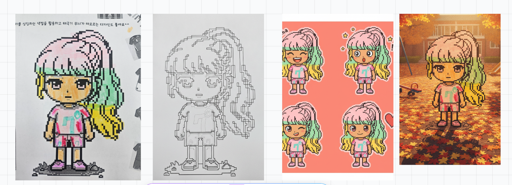
버전별 프롬프트 — 한 줄씩 복사해서 붙여넣기
다운로드한 캐릭터 사진을 믹스보드에 올린 뒤, 아래 프롬프트를 한 줄씩 복사해 붙여넣어 보세요.
잘 됐다면 머리색·옷 번호·표정·배경(봄꽃, 우주, 도서관 …)을 바꿔 나만의 버전을 더 만들어 보세요.
SECTION 03
인공지능으로 만드는
나만의 앱
자리 배치, 학습 도우미, 미니 게임까지. 필요한 기능을 단계별로 설명하면 교실에서 바로 쓰는 웹 앱이 완성됩니다.
준비하기
Gemini 입력창의 [+ 도구 더보기]를 누르면 이렇게 많은 기능이 나와요. 이렇게 많은 기능은 다 뭘까요? 이미지·동영상·음악 만들기부터 Deep Research, 가이드 학습까지 다양하지만, 앱 만들기에서는 그중 Canvas(캔버스)를 주로 활용합니다.
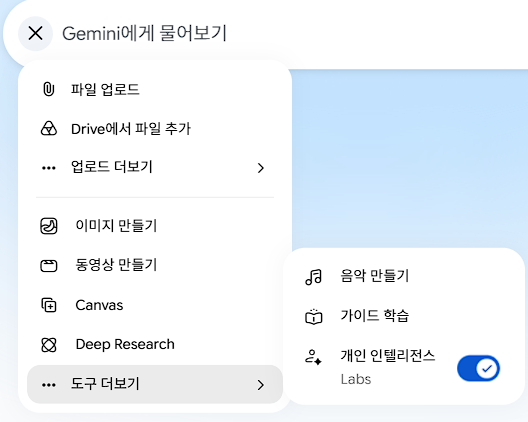
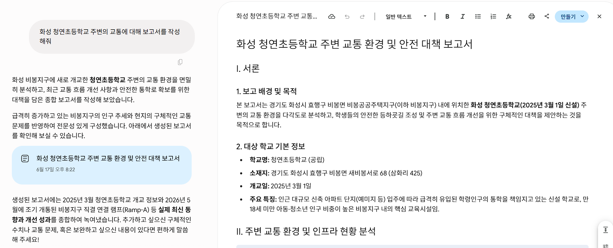
Canvas(캔버스)는 PPT, 게임, 학습 자료, 보고서 등 다양한 결과물을 AI와 대화하듯 소통하며 그 자리에서 함께 고쳐 나가는 편집 도구예요. 한 번에 완성하는 것이 아니라, 보고 → 말하고 → 다듬기를 반복하며 원하는 결과물로 키워 갑니다.
이렇게 왼쪽에서 말하면 오른쪽 문서가 실시간으로 바뀌는 편집 도구예요. [만들기] 버튼에는 여러 기능이 있어서 웹페이지 만들기, 시각화하기, 퀴즈, 오디오 만들기 등 다양한 형태로 결과물을 만들 수 있습니다.
‘Flash’ 모델의 사고 수준 — Standard와 Extended
Flash 모델을 고르면 사고 수준을 고를 수 있어요. AI가 답하기 전에 얼마나 깊이 생각할지를 정하는 설정입니다.
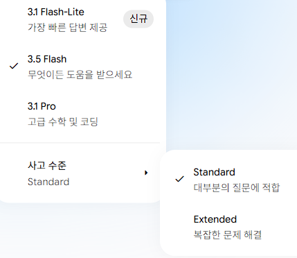
빠르게 바로 답해요. 대부분의 질문에 적합. 학교 예시 — 자리 뽑기·타이머 같은 간단한 앱, 받아쓰기 문장 만들기, 안내장 문구 다듬기처럼 금방 끝나는 일.
한 번 더 깊이 생각해서 답해요. 복잡한 문제 해결에 적합(대신 조금 느려요). 학교 예시 — 점수 계산·순위까지 있는 퀴즈 게임 앱, 여러 조건이 얽힌 시간표·모둠 편성, 단원 전체를 짠 수업 흐름 설계처럼 단계가 많은 일.
👉 평소엔 Standard로 충분하고, 결과가 아쉽거나 복잡한 걸 만들 땐 Extended로 바꿔 보세요.
🚩 미션!
우리 학교 주변 교통에 대한 보고서를 만들어 봅시다.
3.5 Flash · Extended(확장) 모델로 Canvas에서 작성해 보세요. 복잡한 보고서일수록 Extended가 더 꼼꼼하게 정리해 줍니다.
예) “○○초등학교 주변의 교통에 대해 보고서를 작성해줘” → 서론·현황 분석·개선 대책까지 한 번에. 이후 대화로 수치·문제점을 더 보태 다듬어 보세요.
1단계
교실 잔소리 머신 만들기
교실에서 자주 쓰는 잔소리를 모아 자동으로 말해 주는 기계예요. 이름을 넣고, 잔소리를 고르고, 반복 횟수를 정하면 — 웹 TTS로 큰 글씨와 함께 읽어 줍니다. 아래 프롬프트를 복사해 Canvas에 붙여넣어 보세요.
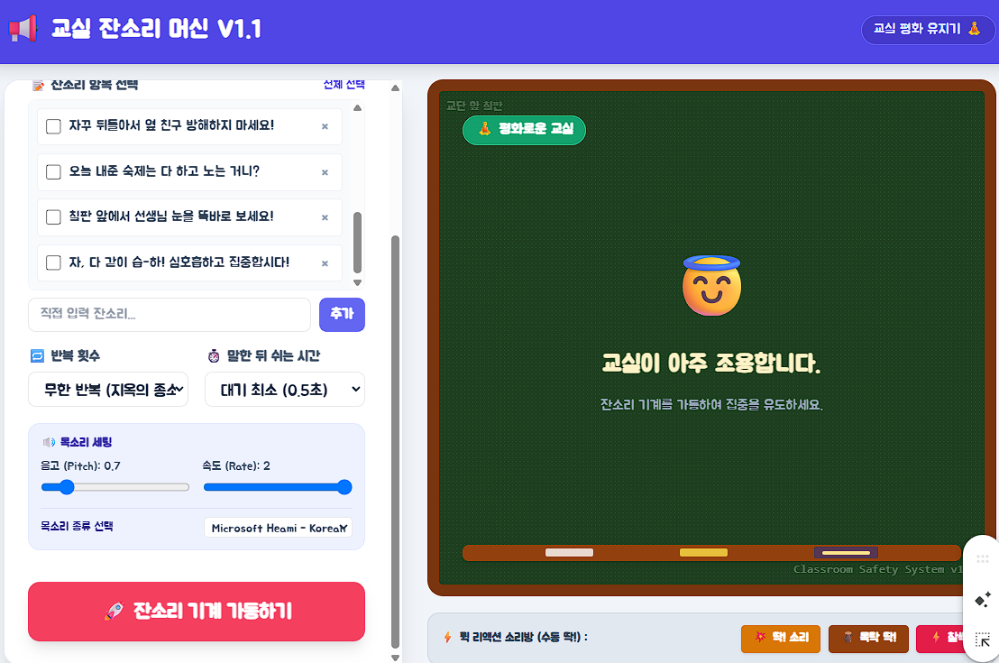
2단계
도안 크래프트 만들기
프롬프트를 입력해 나만의 도안을 생성하고, 만든 도안이 나의 도안 창고에 실시간으로 쌓이는 웹앱이에요. 아래 프롬프트를 복사해 Canvas에 붙여넣어 보세요.
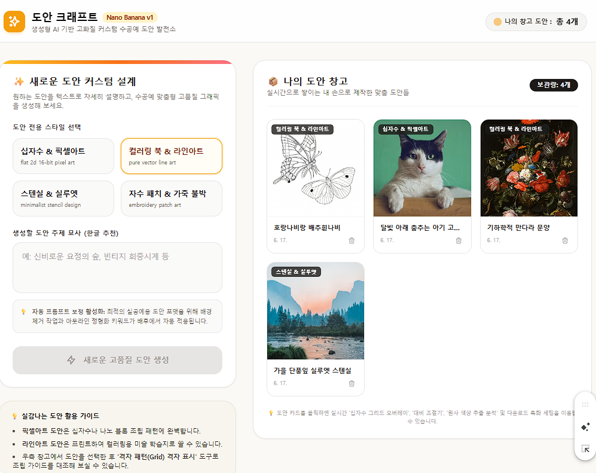
3단계
반짝반짝 수학 카드 게임 만들기
문제 카드와 정답 카드를 뒤집어 짝을 맞추는 메모리카드 게임이에요. 학년·학기·단원을 골라 문제를 넣고, 태블릿·전자칠판에서 바로 즐길 수 있어요. 아래 프롬프트를 복사해 Canvas에 붙여넣어 보세요.
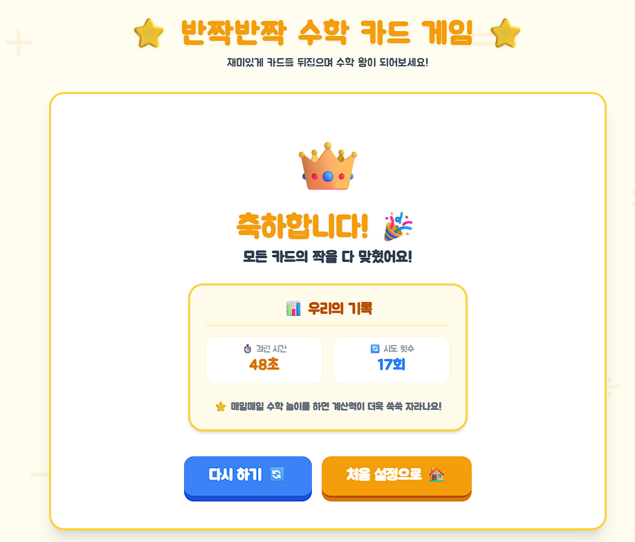
4단계
만능 게임 만들기
만능 게임이란? 배우는 개념어와 간단한 성취기준을 넣고 아래 프롬프트를 붙여넣으면, 어떤 과목이든 빠르게 게임으로 복습할 수 있어요. 두더지 게임과 슈팅 게임 두 가지를 준비했어요.
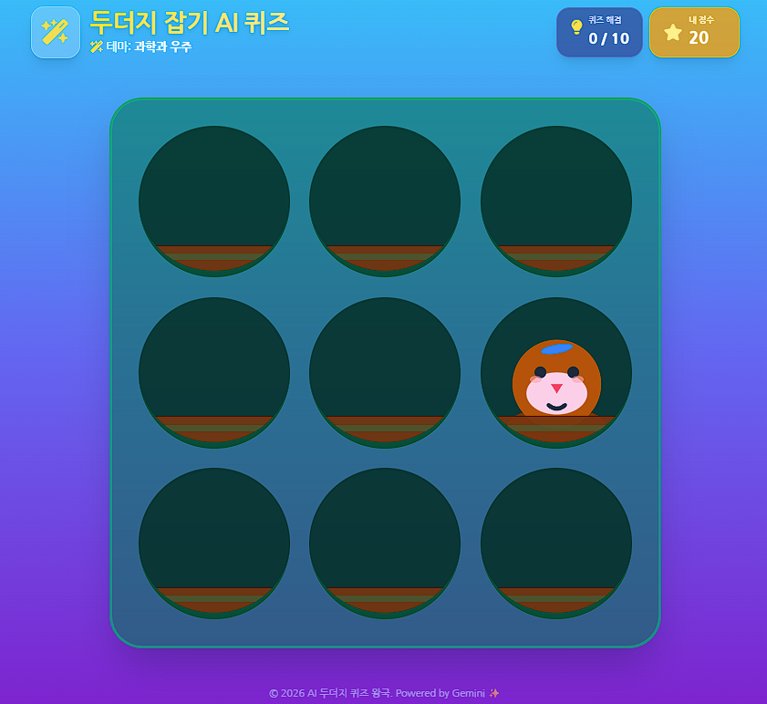
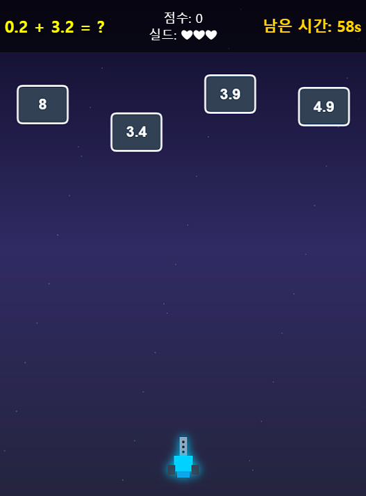
이런 내용을 다뤄요
- 필요한 기능을 단계별로 설명하기
- 자리 배치, 타이머, 퀴즈 등 교실 웹 앱 제작
- 완성한 앱을 링크·QR로 공유하고 재사용
- 프롬프트를 재활용해 다른 과목으로 변형
SECTION 04
패들렛 아케이드 —
PDF만 넣으면
게임이 뚝딱
앞 단원처럼 게임을 하나하나 코딩해 만들기는 쉽지 않죠. 패들렛 아케이드는 PDF 파일을 넣으면 자동으로 게임을 만들어주는 게임형 수업 도구예요. 세 단계만 거치면 우리 반 학습 게임이 1분 만에 완성됩니다.
앞에서는 메모리 카드·두더지·슈팅 게임을 프롬프트로 하나씩 직접 코딩해 봤어요. 만들 때마다 기능을 설명하고 다듬는 과정이 필요했죠. 패들렛 아케이드는 그 과정을 자동으로 처리해 줍니다. 수업 자료(PDF)만 넣으면 알맞은 게임을 골라 만들어 줘요.
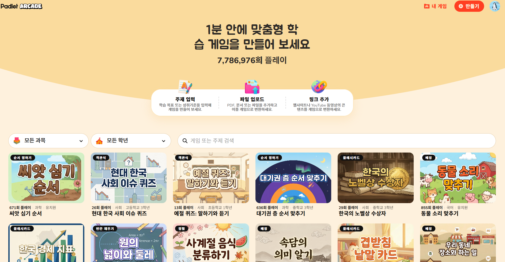
이렇게 만들어요 — 3단계
옵션 한 개 선택
주제 입력 · 파일 업로드 · 링크 추가 세 가지 중 한 가지를 고릅니다. 여기서는 파일 업로드를 선택해요.
PDF 넣고 프롬프트
수업 자료 PDF를 끌어다 넣고, 참고할 점이 있으면 프롬프트로 적어 줍니다.
자동 생성 → 배포
AI가 게임 유형과 문제를 자동으로 만들어 줍니다. 마음에 드는 게임을 골라 완성하고, 완성되면 링크·QR로 배포해요.
자동 생성부터 공유까지 — 실제 화면
파일을 넣으면 아래 순서로 진행됩니다. 게임을 빌드하고 → 완성된 게임을 확인하고 → 링크·QR로 공유해요.
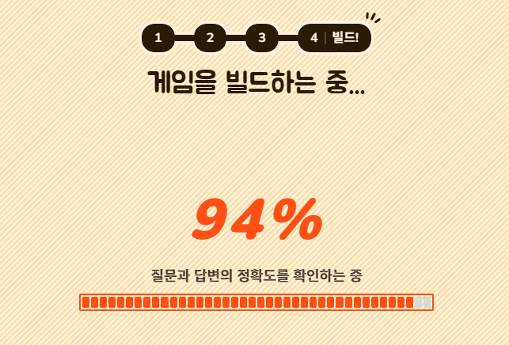
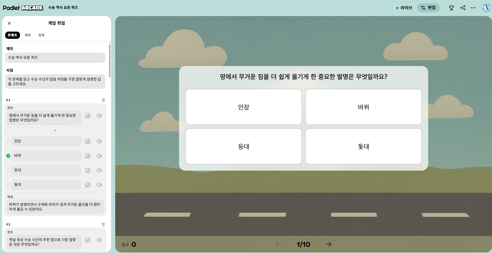
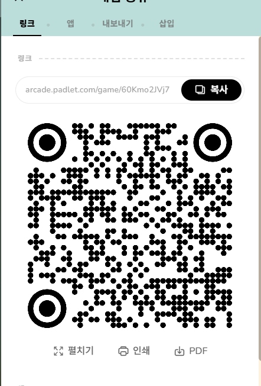
▶ 링크로 만들기
유튜브 링크로 바로 만들기
PDF 대신 유튜브 영상 링크를 넣어도 돼요. ‘링크 추가’를 고르고 주소를 붙여넣으면 영상 내용을 분석해 게임을 만들어 줍니다. 아래 세 영상으로 만들어 보세요.
✅ 바로 실습
실습 예제 PDF로 게임 만들기
아래 PDF를 내려받아 패들렛 아케이드의 파일 업로드에 넣어 보세요. 네 과목 모두 실제 수업용 PPT 자료입니다.
통합 · 1학년
우리 한옥
수학 · 4학년
직각보다 작은 각과 큰 각
과학 · 5학년
빛은 어떻게 나아갈까
실과 · 5학년
수송 수단의 발달 과정과 미래 수송 수단
출처: 아이스크림(i-Scream) — 위 네 개의 PDF는 아이스크림의 PPT 수업 자료입니다.
이런 내용을 다뤄요
- 주제 입력 · 파일 업로드 · 링크 추가 중 한 가지로 시작하기
- 수업 PDF를 넣고 참고 사항을 프롬프트로 덧붙이기
- AI가 게임 유형을 자동으로 골라 생성하는 과정 보기
- 완성한 게임을 링크·QR로 배포해 학생과 함께 즐기기
SECTION 05
PPT 자료가
이렇게 쉽게?
주제만 입력하면 발표 슬라이드의 초안이 완성됩니다. 디자인과 구성을 AI에게 맡기고, 선생님은 내용에만 집중하세요.
이런 내용을 다뤄요
- 주제 입력 → 슬라이드 초안 자동 생성
- 디자인과 구성을 AI에게 위임
- 내용 보강과 다듬기만 직접
- 활용 예: 단원 도입 슬라이드, 발표 자료
캔버스 — 슬라이드 만드는 방법
슬라이드 편집이 가능한 깔끔한 형태를 만들 때 많이 사용해요. 주제나 문서를 넣고 아래처럼 요청하면, 캔버스 오른쪽 위에 [Slides로 내보내기] 버튼이 나타나 바로 슬라이드로 내려받을 수 있습니다.
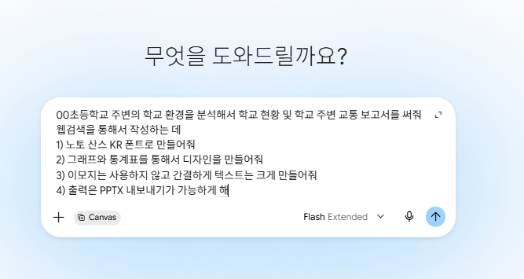
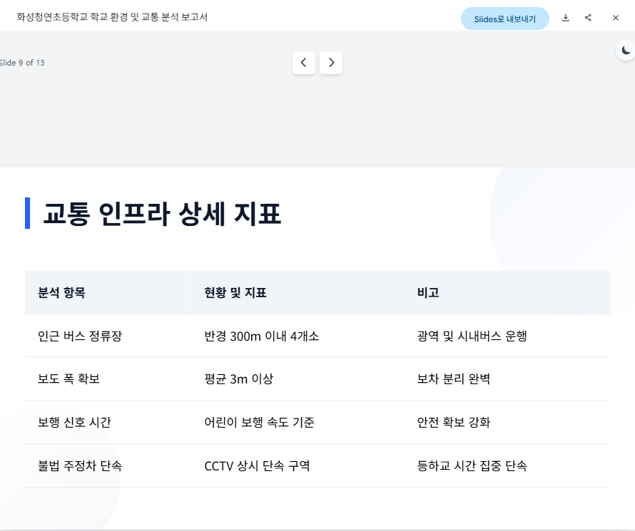
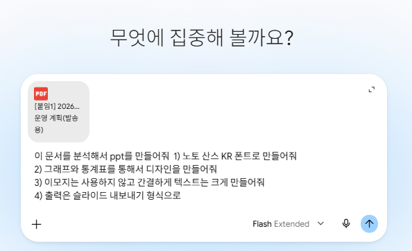
기초 프롬프트
이 틀만 채우면 끝
아래 틀에서 주제와 분량만 바꿔 쓰면 됩니다. 주제 자리에 직접 입력하거나, 문서·PDF를 첨부해 “이 문서를 분석해서”로 시작하세요.
업무용 예시
전달 연수 PPT 만들기
공문·계획서 같은 문서를 첨부하고 아래 프롬프트를 넣으면, 교직원 전달 연수용 슬라이드로 정리해 줍니다. 아래 실습용 PDF를 내려받아 Gemini에 첨부해 보세요.
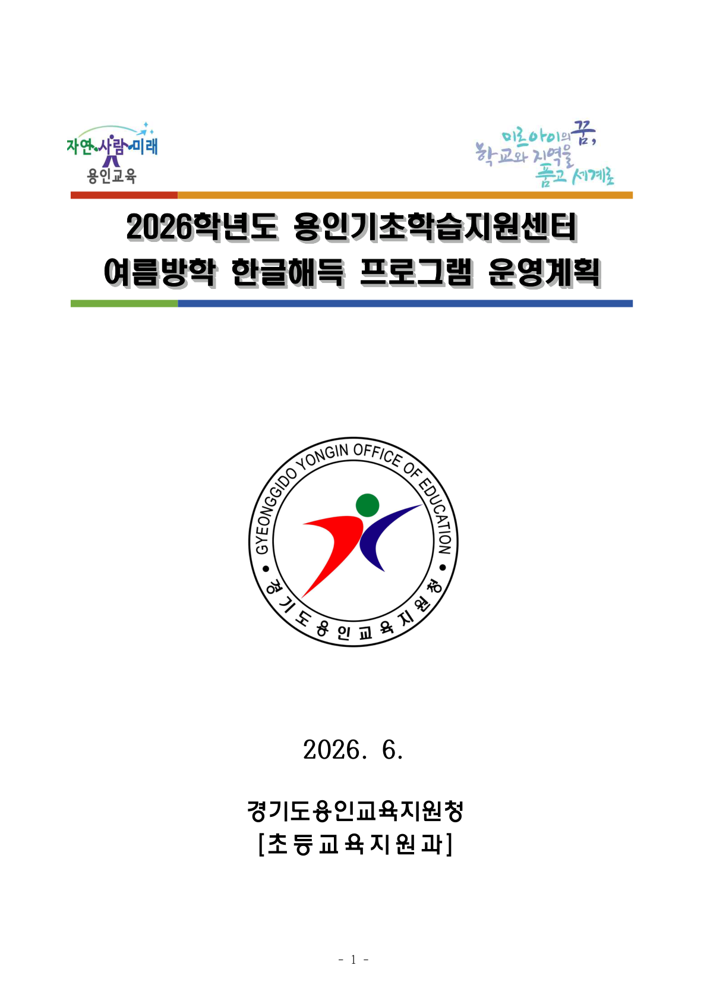
업무 · 운영 계획
2026 여름방학 한글해득 프로그램 운영 계획
학생용 예시
유튜브 영상으로 후속 수업 슬라이드 만들기
학생용은 입력을 유튜브 링크로 바꾸고, 퀴즈·재미 요소를 더하고, 구글 주아체(Jua) 폰트를 쓰는 점이 달라요. (예시: 안전동화 ‘먹지 말아야 할 불량 식품’)
🚩 미션! 내가 구성하는 창체 수업
주제를 고르고 → 영상을 찾고 → 후속 수업 슬라이드를 만들어 공유까지 해 봅시다. 아래 3단계를 차례대로 따라 하세요.
1단계
수업 주제 정하기
창의적 체험활동(창체) 또는 교과 중에서 한 가지 주제를 고르세요. 아래 예시에서 골라도 좋아요.
교통안전, 식품안전, 손 씻기, 화재·재난 대피, 약물·흡연 예방
분리배출, 에너지 절약, 기후위기, 계절과 날씨, 동식물 관찰
친구와 사이좋게 지내기, 정직, 배려와 존중, 효
학교폭력 예방, 성교육·성폭력 예방, 생명존중·자살예방
독도교육, 통일교육, 보훈·계기교육, 민주시민교육
장애이해교육, 다문화·세계시민교육, 인권교육, 노동인권
사이버 예절, 개인정보 지키기, 미디어 리터러시, 저작권
직업 알아보기, 용돈·경제 교육, 독서교육, 식생활교육
2단계
표준 프롬프트로 학생용 영상 찾기
고른 주제로 수업에 쓸 유튜브 영상을 찾습니다. 아래 프롬프트를 복사해 [ ] 부분만 바꿔 Gemini에 넣어 보세요. (검색이 필요하니 구글 검색 기능을 켜고 사용)
👉 추천받은 영상 중 우리 반에 맞는 것을 하나 골라 링크를 복사해 두세요.
3단계
후속 수업 슬라이드 만들고 공유하기
고른 영상 링크와 함께 아래 표준 프롬프트를 넣으면 후속 수업 슬라이드가 만들어집니다. [ ] 부분을 우리 수업에 맞게 바꿔 보세요.
👉 완성되면 캔버스 오른쪽 위 [Slides로 내보내기]로 내려받고, 구글 슬라이드에서 [공유] 버튼으로 링크를 만들어 동료 선생님과 나눠 보세요.
SECTION 06
인공지능으로
간단한 영상 만들기
도입 영상, 설명 영상을 클릭 몇 번으로. 복잡한 편집 프로그램 없이 수업용 짧은 영상을 만드는 방법을 다룹니다.
이런 내용을 다뤄요
- 도입·설명 영상 자동 생성
- 대본, 자막, AI 음성 활용하기
- 복잡한 편집 없이 짧은 영상 완성
- 활용 예: 수업 도입 영상, 개념 설명 영상